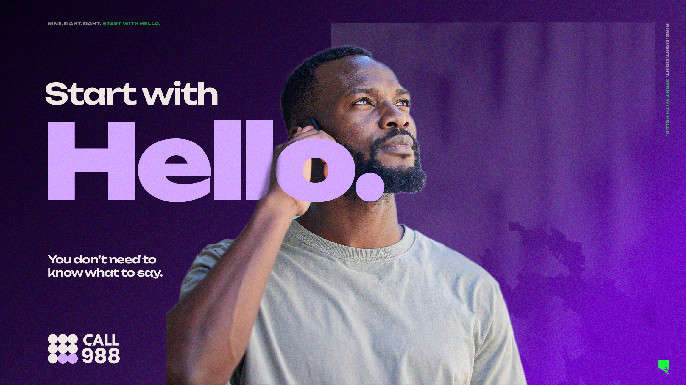

You don't have to know what to say. You don't have to be in an emergency. Hello is enough.

The first thing you say when a 988 counselor picks up is hello. That's it. You don't need to explain yourself or have the right words ready. Saying hello is the first step, and everything after it gets easier from there.
This concept responds directly to the research: the people who need 988 most are often the people who don't think they qualify. Whether someone is in crisis or just carrying something they haven't told anyone, the campaign works to lower the stakes of reaching out. Three ways in — call, text, or chat — each one designed to meet people where they are and make starting as easy as possible.
988 is here for all of it. For anxiety, grief, and hard days. For people experiencing a mental health emergency. For someone worried about a neighbor. For a parent scared for their kid. For a friend who doesn't know what else to do. "Start with Hello" holds all of that without drawing a line between who qualifies and who doesn't.
Placeholder — final key visual will be updated with BHSB purple palette and bolder typography
Lowering the stakes. BHSB's top finding: people don't call because they don't think their problem is big enough. The campaign will be built to remove that threshold at every touchpoint.
No clinical language. Everyday words like "anxious," "grieving," and "overwhelmed" will make 988 feel accessible to everyone.
Confidentiality is a top concern. Across demographics surveyed, fear of being found out was a primary barrier. Messaging will address privacy and trust directly and consistently.
Human, not institutional. Distrust of systems is heightened across Baltimore, particularly in communities already navigating other pressures. The tone will feel like a neighbor, not a government program.
Hopeful, not heavy. Research showed that despairing visuals cause people to disengage. Purple as primary color will balance warmth with seriousness throughout the visual system.
Creative tailored for younger audiences, with text and chat as primary entry points. Sports figures and trusted community voices as potential messengers.
Practical framing, phone call as primary entry point. Community figures and athletes as trusted messengers. Stigma reduction is especially important for this audience.
Messaging will center affirming, culturally competent language. The dedicated 988 LGBTQ+ youth line is available 24/7 and worth featuring prominently for this audience.
988 handles emergencies too. The campaign will make clear that 988 is appropriate across the full spectrum, so no one hesitates when it matters most.
Audience priorities and messaging approaches will be refined through community co-design sessions and additional research prior to final creative development.
[OPEN: Real Baltimore faces across ages, neighborhoods, backgrounds. Each person is in a quiet, private moment.]
A woman at her kitchen table, coffee gone cold, staring at nothing.
An older man on the stoop, not going anywhere.
A kid at a school window, watching the street below while class goes on behind them.
A father in the car, engine off, not ready to go inside yet.
VO: "You don't have to know what to say."
[Each person picks up the phone. Or opens a text. Or a chat window.]
VO: "You don't have to be sure. You just have to start somewhere."
[Each screen shows the same first word typed or spoken: Hello.]
VO: "988 is here to help. Free, confidential support from specialized counselors, any time — for anxiety, grief, hard days, and emergencies. For yourself. For someone you love."
VO: "Start with Hello."
[END CARD: "Start with Hello." — BHSB purple. 988 large. Call. Text. Chat. 988helpline.org]
Four Baltimore faces, four quiet moments, each representing a different reason someone might reach out without naming a diagnosis or threshold. "For yourself. For someone you love." opens the door for callers reaching out on behalf of a neighbor or friend, which research identified as a strong motivator especially among youth.
"You don't have to have the right words.
You don't have to know how to explain it. You don't have to be sure.
Anxious. Overwhelmed. Grieving something. Experiencing something you can't name yet. Scared for someone you love. That's enough.
988 is here to help. Free, confidential support — a specialized counselor picks up, real person, any time. Your call stays private. Call, text, or chat online.
You don't have to know what to say.
Start with Hello.
Nine. Eight. Eight."
"Your call stays private" speaks to the confidentiality concern without dwelling on fear. "Scared for someone you love" expands the caller pool beyond people in personal distress. The closing three-beat tag — Nine. Eight. Eight. — is the sonic anchor across all radio.
The following represents a proposed activation framework. Specific channels, partners, and formats will be confirmed through research, community co-design, and client alignment prior to final campaign development.
Potential formats include broadcast spots, streaming pre-roll, and ambassador-driven content. Specific formats and partners to be determined based on budget and reach goals.
Radio remains one of the strongest reach channels for Baltimore audiences across age groups. Spanish-language placements would be part of targeted outreach to specific communities.
Placement strategy would prioritize ZIP codes with the highest 911 behavioral health call volume, concentrating presence where the need is most acute.
Social and digital content tailored by audience and neighborhood. Community organization partners would be involved in reviewing creative prior to launch.
Printed materials distributed through trusted in-person channels where Baltimore communities already gather. One message, one number. Spanish versions included.
Baltimore athletes as potential campaign voices, building on existing relationships between Maryland sports organizations and mental health advocacy. Specific partnerships to be explored.
Reaching younger audiences through channels and voices they already trust. Text and chat positioned as primary entry points. Specific activation tactics to be informed by audience research.
"Start with Hello." as a mural phrase in targeted neighborhoods. Coordinates with Mental Health America's annual light-up-green campaign each May, tying purple and green together across Baltimore.
Campaign intensity tied to moments of heightened need. Copy tailored to specific communities — for example, "Start here, hon." as a Hampden-specific variation that carries real local warmth.
On these alternatives: The full proposal is built around "Start with Hello" as the research-informed lead. These options are included to show range and could be considered for specific audience segments or future phases. They would not be developed in parallel.
Urgency platform. The blank fills for every audience, rotating in the same spot.
Three executions, one platform. Don't Wait. Call. 988. / Don't Wait. Text. 988. / Don't Wait. Chat. 988. Each version targets a different entry point — phone for older adults, text for youth, chat for digital-native audiences. TV shows real Baltimore people in the moment of talking themselves out of asking for help, then reframes that moment as exactly the reason to act.
Research basis: BHSB's core finding that people don't call because they don't think they qualify. Strongest for audiences who need a push more than a permission slip.
The check-in that already happens, with a number to use when the answer is no.
"You good? If the answer's no, 988." Leverages a phrase already in daily Baltimore use. TV is a real block, a real neighbor, a real "not really." Carries BHSB's existing "Because we all need help sometimes" and "We're here to help" forward with new energy and local specificity.
Research basis: Messenger effect. Trusted community voices asking the question outperform institutional messaging. Strongest for peer-to-peer, social, and community activation channels.